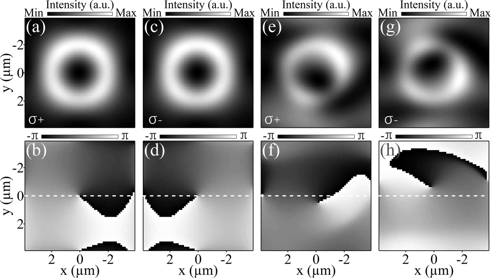
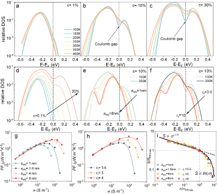

Northeastern University
2026 – Present
M.S. in Applied MathematicsBoston, Massachusetts, USA
I am currently pursuing an M.S. in Applied Mathematics at Northeastern University. I previously earned a Master's degree in Electronic Information and a Bachelor's degree in Electrical Engineering and Automation from Fudan University.
My research interests include numerical optimization, scientific computing, computational physics, numerical linear algebra, and machine learning algorithms.
Numerical Optimization · Scientific Computing · Computational Physics · Monte Carlo Methods · Numerical Linear Algebra · Machine Learning
Xiaoran Wei, Guanlin Wang, Yong Cui, et al.
Materials Today, 96, 103330 (2026)
First Author
Contribution: Led and conducted the research on charge delocalization and thermoelectric performance in organic semiconductors.
View Publication →
Xiaokun Zhai, Xiaoran Wei, Peilin Wang, et al.
Nano Letters, 26, 4402–4409 (2026)
Contribution: Performed all numerical simulations and computational analysis of spin–orbit coupled polariton vortices.
View Publication →
Yuqian Liu, Xiaoran Wei, Dorothea Scheunemann, et al.
ACS Energy Letters, 10, 6318–6326 (2025)
Contribution: Conducted Monte Carlo simulations to investigate the soft Coulomb gap and charge transport in doped conjugated polymers.
View Publication →Frequency estimation and signal reconstruction from irregularly sampled data using least squares, variable projection, and L-BFGS optimization.
Implementations of singular value decomposition, QR factorization, and fast Fourier transform algorithms.
Implementations of Newton methods, BFGS, L-BFGS, and nonlinear least squares optimization algorithms.
I welcome opportunities for research collaboration and discussions in numerical optimization, scientific computing, and applied mathematics.
Email: wei.xiaoran@northeastern.edu
GitHub: GitHub Profile